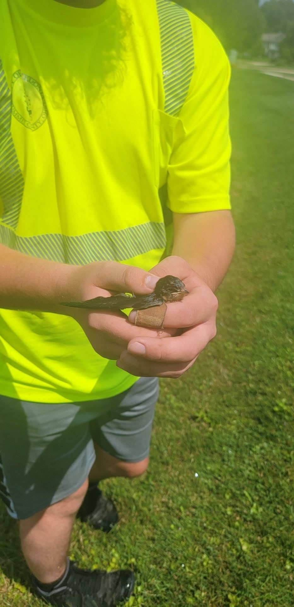
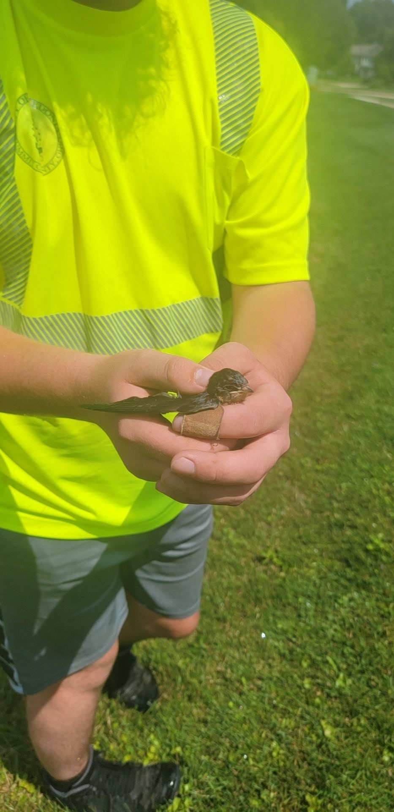

Some of my favorite things
Favorite Game: The Witcher 3

The Witcher 3 is an action-rpg game based on a set of books written by Andrzej Sapkowski. The general premise is that you play as Geralt of Rivia, a modified human known as a "Witcher" whos purpose is to investigate mystical creatures and decide whether or not they need to be killed or if it's safe to leave them be.
The game is known for its fun combat system and extensive lore. The combat consisting of melee combat via swords and a series of short range attacks using a magic system known as "signs" along with a variety of different devices to aid in taking down the various enemies.
Here's a Witcher 3 review from IGN
Favorite Book Series: The "Legend" Trilogy by Marie Lu
The legend trilogy is a dystopian sci-fi book series which take place in a far off future in which the United States is ravaged with civil war. The two main character are complete opposites, "Day" being a wanted criminal with a massive bounty on his head and "June" being the governments pride and joy as a protigy child soldier trained from a young age to aid in the war effort.
The book is great if you enjoy dystopian or sci-fi stories with dark gritty atmosphere and all sorts of plot twists.
Favorite Animal: Red Panda
The Red Panda is a small red, black, and white mammal native to the eartern Himalayas as-well as a few parts of china. Red Panda's are largely known for their defense mechanism where, in the event they get intimidated, they will stand up on their hind legs and raise their front paws above their head to make themselves appear larger than they are to predators in order to dissuade them from attacking the Red Panda.
Unfortunately for the Red Panda the defense mechanism they spend tens of thousands of years evolving just looks like a toddler asking to be picked up and, as a result, it's not uncommon for tourists to be attacked by the wild animals they thought wanted "uppies".
 

My Programming Language Experience/Skill level:
- Java: Moderate
- JavaScript: Moderate
- C#: Moderate
- HTML/CSS: Moderate
- C++: Beginner
- Binary: Reluctantly Moderate
Some Random Facts about Me:
- I'm 18
- I was adopted
- I want to become a video-game developer
- I've been interested in game development for roughly 6 years and I've been studying programming consistently for roughly 1.5 years.
- I've had over 20 pets in my lifetime
- I love animals and take great pride in my habit of petting feral ones
Feral Animals I've managed to pet:
(Pictures at the bottom)
- Squirrels: 2
- Voles: 1
- Moles: 2
- Mice: 3
- Chipmonks: 3
- Bats: 2
- Birds: 2(This took place while I worked as a hydrant flusher for the fire departmment)
- Raccoons: 1
- Barracuda: 0(I tried and that counts for something right?)
- Deer: 3
- Rabbits: 1
- Snakes: ~7